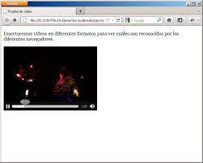

En HTML5 se introduce la interesante posibilidad de mostrar videos directamente desde nuestro navegador. De hecho, si arrastramos un video a la ventana del navegador, veremos que comienza a reproducirse en él. Para poder insertar videos en nuestras páginas HTML tenemos que utilizar la etiqueta < video>, que junto a la etiqueta < source> podremos utilizar estas capacidades multimedia de HTML5.
Ojo: Si lo que quieres es insertar videos desde Youtube, Vimeo u otro servicio alternativo, debes utilizar la etiqueta HTML iframe en lugar de la etiqueta < video>.
